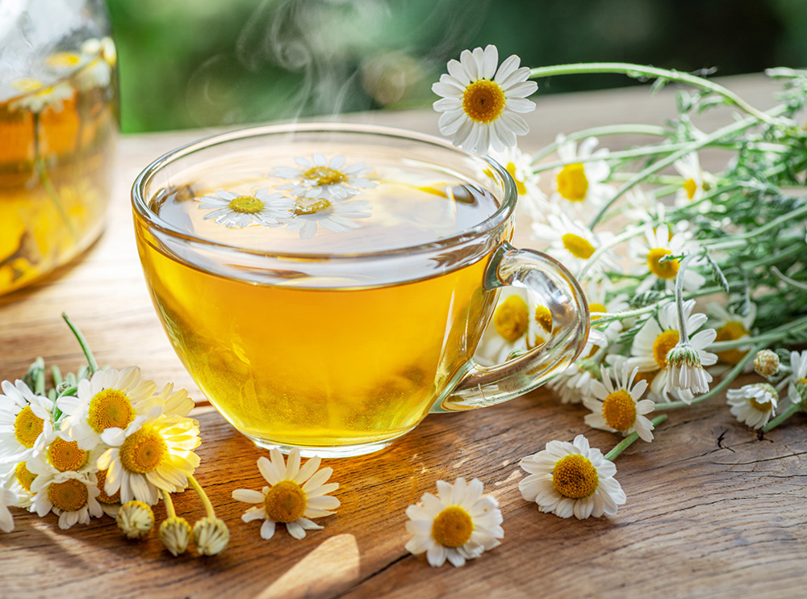
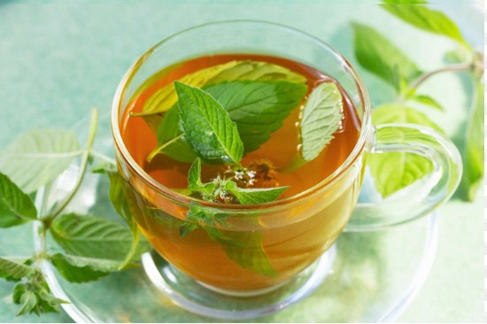

Yrteillä on monenlaisia vaikutuksia
Yrttejä on aikojen saatossa käytetty parantamaan sairauksia, nostamaan immuniteettia tai muuttamaan aivojen toimintaa haluttuun suuntaan. Niitä yleensä nautitaan sekoitettuna kuumaan veteen ja ne ovat siksi suosittu vaihtoehto, jos haluaa välttää mm. kofeiinia. Kannattaa kuitenkin selvittää sopiiko tuote itselleen esim. allergioiden takia. Lisäksi useimpien yrttien kohdalla kuppimäärä on suositeltavaa pitää 2:ssa tai 3:ssa.
Kamomillatee
- Rentouttaa lihaksia
- Helpottaa nukahtamista
- Vähentää tulehduksia
- Parantaa sydämen toimintaa
- Helpottaa stressiä ja ahdistusta
- Tasapainottaa verensokeria
- Lisää immuniteettikykyä
- Helpottaa kuukautiskipuja

Piparminttutee
- Edistää ruoansulatusta
- Helpottaa päänsärkyä ja migreeniä
- Raikastaa hengitystä
- Vähentää nuhaa ja avaa tukkiutuneen nenän
- Parantaa keskittymiskykyä
- Helpottaa kuukautiskipuja
- Helpottaa kausiallergiaa
